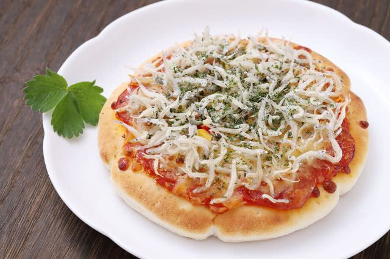
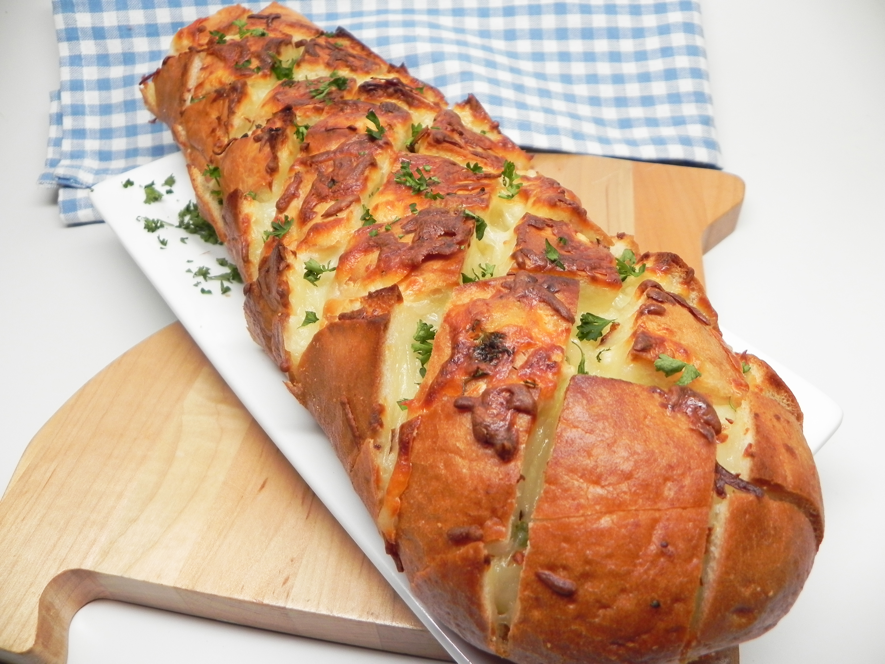
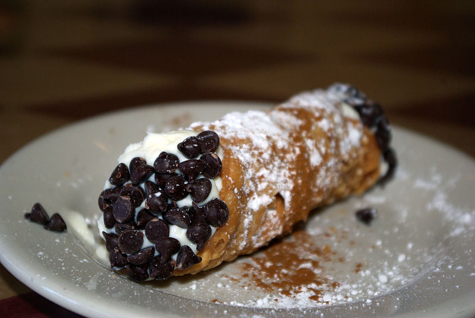

I get to travel the world a lot when I blog
People regonize me as a celebrity when I'm visting a diffrent state or country.
I got several awards for having the best blog in the world.
I was featured on several cooking shows with famouse people

I started my career when I was in 1st grade
I made a dish better than gordon ramsey and he gave me praise as the best chef in the world
I started my own restaurant shortly after getting a grammys award for the food I created
I currently make the most income in the food industry for my restaurant and my amazing food blogs
 |
 |
|  |  |
Spaghetti is one of my favorite itialian dishes it smells nice and fills you up
Pizza is another one of my all time favorite foods a nice cheese pizza hits the spot
Stuffed itilian bread is a very nice dish it has a great taste and smells amazing
my favorite itialian dish of all time is sicily its a nice dessert that is creamy and has chocolote